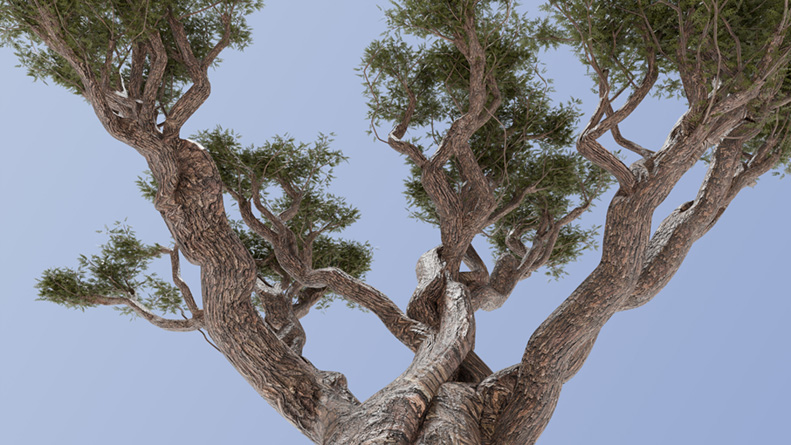
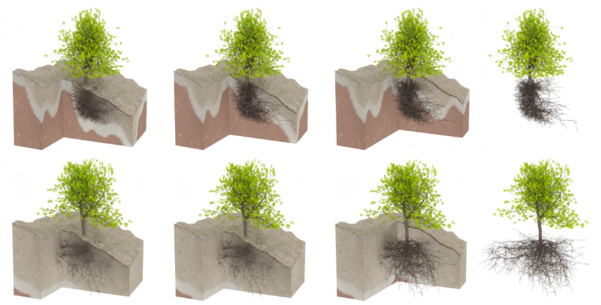

Stressful Tree Modeling: Breaking Branches with Strands
Computational modeling of tree branches and wood using strand-based representations with Cosserat rod physics to simulate realistic breaking patterns.
Projects
A selection of recent SIGGRAPH papers from the lab and our collaborators. Each links out to the project page with paper, video, and supplementary material.
Computational modeling of tree branches and wood using strand-based representations with Cosserat rod physics to simulate realistic breaking patterns.

A combustion simulation framework modeling fire phenomena across solids, liquids, and gases with multi-species thermodynamics and reactive transport.

A simulation approach for dynamic wildfire interactions including combustion, heat transfer, and firebrand transport across vegetation and soil.

A strand-based volumetric approach for procedural tree modeling that captures lateral development and enables interactive generation of detailed tree structures.

A procedural modeling approach that simulates realistic tree development by coordinating above-ground shoots with underground root systems through soil modeling and long-distance signaling.